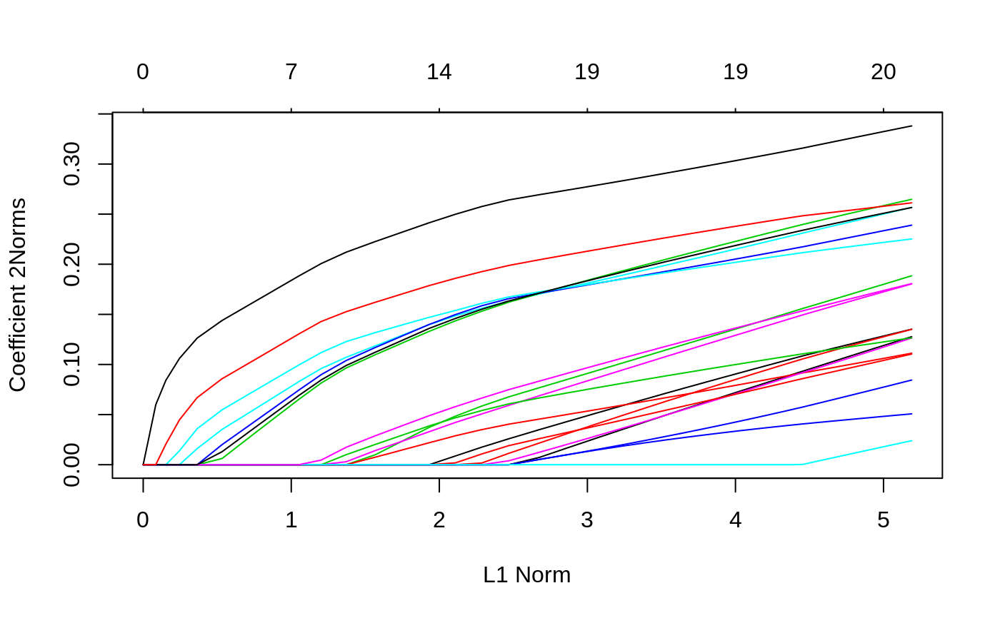
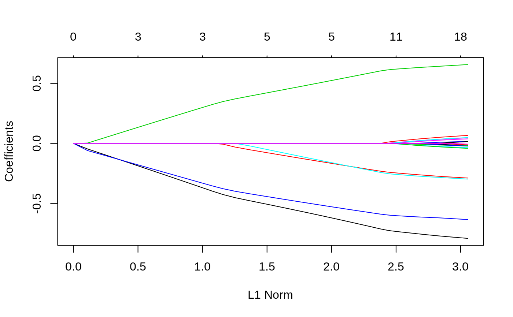
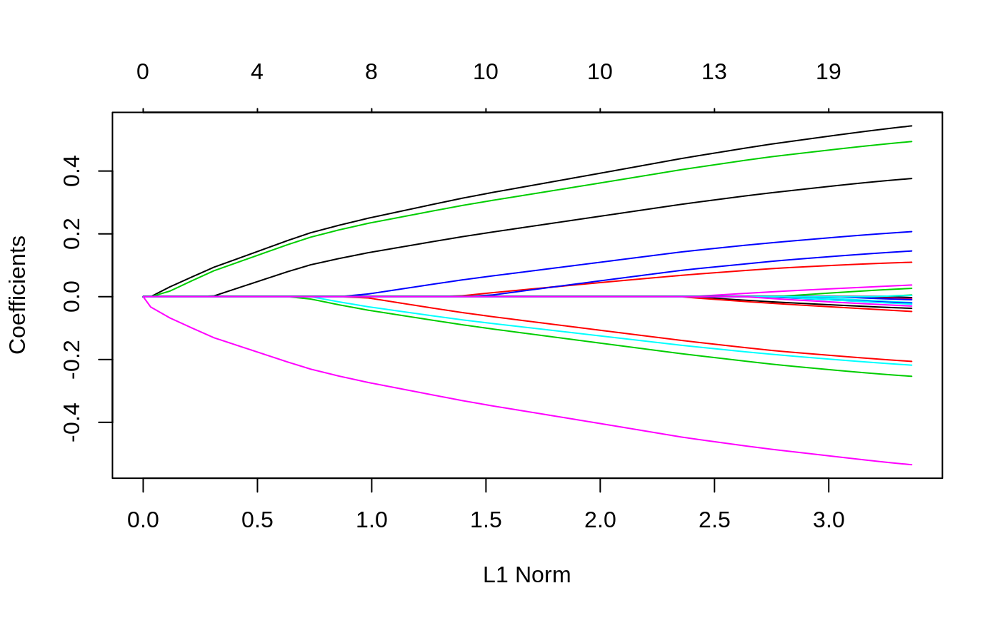

glmnet.RdFit a generalized linear model via penalized maximum likelihood. The regularization path is computed for the lasso or elasticnet penalty at a grid of values for the regularization parameter lambda. Can deal with all shapes of data, including very large sparse data matrices. Fits linear, logistic and multinomial, poisson, and Cox regression models.
glmnet(x, y, family = c("gaussian", "binomial", "poisson", "multinomial", "cox", "mgaussian"), weights, offset = NULL, alpha = 1, nlambda = 100, lambda.min.ratio = ifelse(nobs < nvars, 0.01, 1e-04), lambda = NULL, standardize = TRUE, intercept = TRUE, thresh = 1e-07, dfmax = nvars + 1, pmax = min(dfmax * 2 + 20, nvars), exclude, penalty.factor = rep(1, nvars), lower.limits = -Inf, upper.limits = Inf, maxit = 1e+05, type.gaussian = ifelse(nvars < 500, "covariance", "naive"), type.logistic = c("Newton", "modified.Newton"), standardize.response = FALSE, type.multinomial = c("ungrouped", "grouped"), relax = FALSE, trace.it = 0, ...) relax.glmnet(fit, x, ..., maxp = n - 3, path = FALSE, check.args = TRUE)
| x | input matrix, of dimension nobs x nvars; each row is an observation
vector. Can be in sparse matrix format (inherit from class
|
|---|---|
| y | response variable. Quantitative for |
| family | Response type (see above) |
| weights | observation weights. Can be total counts if responses are proportion matrices. Default is 1 for each observation |
| offset | A vector of length |
| alpha | The elasticnet mixing parameter, with \(0\le\alpha\le 1\).
The penalty is defined as
$$(1-\alpha)/2||\beta||_2^2+\alpha||\beta||_1.$$ |
| nlambda | The number of |
| lambda.min.ratio | Smallest value for |
| lambda | A user supplied |
| standardize | Logical flag for x variable standardization, prior to
fitting the model sequence. The coefficients are always returned on the
original scale. Default is |
| intercept | Should intercept(s) be fitted (default=TRUE) or set to zero (FALSE) |
| thresh | Convergence threshold for coordinate descent. Each inner
coordinate-descent loop continues until the maximum change in the objective
after any coefficient update is less than |
| dfmax | Limit the maximum number of variables in the model. Useful for
very large |
| pmax | Limit the maximum number of variables ever to be nonzero |
| exclude | Indices of variables to be excluded from the model. Default is none. Equivalent to an infinite penalty factor (next item). |
| penalty.factor | Separate penalty factors can be applied to each
coefficient. This is a number that multiplies |
| lower.limits | Vector of lower limits for each coefficient; default
|
| upper.limits | Vector of upper limits for each coefficient; default
|
| maxit | Maximum number of passes over the data for all lambda values; default is 10^5. |
| type.gaussian | Two algorithm types are supported for (only)
|
| type.logistic | If |
| standardize.response | This is for the |
| type.multinomial | If |
| relax | If |
| trace.it | If |
| ... | Additional argument used in |
| fit | For |
| maxp | a limit on how many relaxed coefficients are allowed. Default is 'n-3', where 'n' is the sample size. This may not be sufficient for non-gaussian familes, in which case users should supply a smaller value. This argument can be supplied directly to 'glmnet'. |
| path | Since |
| check.args | Should |
An object with S3 class "glmnet","*" , where "*" is
"elnet", "lognet", "multnet", "fishnet"
(poisson), "coxnet" or "mrelnet" for the various types of
models. If the model was created with relax=TRUE then this class has
a prefix class of "relaxed".
the call that produced this object
Intercept sequence of length length(lambda)
For "elnet", "lognet", "fishnet" and
"coxnet" models, a nvars x length(lambda) matrix of
coefficients, stored in sparse column format ("CsparseMatrix"). For
"multnet" and "mgaussian", a list of nc such matrices,
one for each class.
The actual sequence of lambda
values used. When alpha=0, the largest lambda reported does not quite
give the zero coefficients reported (lambda=inf would in principle).
Instead, the largest lambda for alpha=0.001 is used, and the
sequence of lambda values is derived from this.
The
fraction of (null) deviance explained (for "elnet", this is the
R-square). The deviance calculations incorporate weights if present in the
model. The deviance is defined to be 2*(loglike_sat - loglike), where
loglike_sat is the log-likelihood for the saturated model (a model with a
free parameter per observation). Hence dev.ratio=1-dev/nulldev.
Null deviance (per observation). This is defined to be 2*(loglike_sat -loglike(Null)); The NULL model refers to the intercept model, except for the Cox, where it is the 0 model.
The number of
nonzero coefficients for each value of lambda. For "multnet",
this is the number of variables with a nonzero coefficient for any
class.
For "multnet" and "mrelnet" only. A
matrix consisting of the number of nonzero coefficients per class
dimension of coefficient matrix (ices)
number of observations
total passes over the data summed over all lambda values
a logical variable indicating whether an offset was included in the model
error flag, for warnings and errors (largely for internal debugging).
If relax=TRUE, this
additional item is another glmnet object with different values for
beta and dev.ratio
The sequence of models implied by lambda is fit by coordinate
descent. For family="gaussian" this is the lasso sequence if
alpha=1, else it is the elasticnet sequence. For the other families,
this is a lasso or elasticnet regularization path for fitting the
generalized linear regression paths, by maximizing the appropriate penalized
log-likelihood (partial likelihood for the "cox" model). Sometimes the
sequence is truncated before nlambda values of lambda have
been used, because of instabilities in the inverse link functions near a
saturated fit. glmnet(...,family="binomial") fits a traditional
logistic regression model for the log-odds.
glmnet(...,family="multinomial") fits a symmetric multinomial model,
where each class is represented by a linear model (on the log-scale). The
penalties take care of redundancies. A two-class "multinomial" model
will produce the same fit as the corresponding "binomial" model,
except the pair of coefficient matrices will be equal in magnitude and
opposite in sign, and half the "binomial" values. Note that the
objective function for "gaussian" is $$1/2 RSS/nobs +
\lambda*penalty,$$ and for the other models it is $$-loglik/nobs +
\lambda*penalty.$$ Note also that for "gaussian", glmnet
standardizes y to have unit variance (using 1/n rather than 1/(n-1) formula)
before computing its lambda sequence (and then unstandardizes the resulting
coefficients); if you wish to reproduce/compare results with other software,
best to supply a standardized y. The coefficients for any predictor
variables with zero variance are set to zero for all values of lambda. The
latest two features in glmnet are the family="mgaussian" family and
the type.multinomial="grouped" option for multinomial fitting. The
former allows a multi-response gaussian model to be fit, using a "group
-lasso" penalty on the coefficients for each variable. Tying the responses
together like this is called "multi-task" learning in some domains. The
grouped multinomial allows the same penalty for the
family="multinomial" model, which is also multi-responsed. For both
of these the penalty on the coefficient vector for variable j is
$$(1-\alpha)/2||\beta_j||_2^2+\alpha||\beta_j||_2.$$ When alpha=1
this is a group-lasso penalty, and otherwise it mixes with quadratic just
like elasticnet. A small detail in the Cox model: if death times are tied
with censored times, we assume the censored times occurred just
before the death times in computing the Breslow approximation; if
users prefer the usual convention of after, they can add a small
number to all censoring times to achieve this effect. If relax=TRUE
a duplicate sequence of models is produced, where each active set in the
elastic-net path is refit without regularization. The result of this is a
matching "glmnet" object which is stored on the original object in a
component named "relaxed", and is part of the glmnet output.
Generally users will not call relax.glmnet directly, unless the
original 'glmnet' object took a long time to fit. But if they do, they must
supply the fit, and all the original arguments used to create that fit. They
can limit the length of the relaxed path via 'maxp'.
Friedman, J., Hastie, T. and Tibshirani, R. (2008)
Regularization Paths for Generalized Linear Models via Coordinate
Descent, https://web.stanford.edu/~hastie/Papers/glmnet.pdf
Journal of Statistical Software, Vol. 33(1), 1-22 Feb 2010
https://www.jstatsoft.org/v33/i01/
Simon, N., Friedman, J., Hastie,
T., Tibshirani, R. (2011) Regularization Paths for Cox's Proportional
Hazards Model via Coordinate Descent, Journal of Statistical Software, Vol.
39(5) 1-13
https://www.jstatsoft.org/v39/i05/
Tibshirani,
Robert, Bien, J., Friedman, J., Hastie, T.,Simon, N.,Taylor, J. and
Tibshirani, Ryan. (2012) Strong Rules for Discarding Predictors in
Lasso-type Problems, JRSSB vol 74,
https://statweb.stanford.edu/~tibs/ftp/strong.pdf
Stanford
Statistics Technical Report
https://arxiv.org/abs/1707.08692
Hastie, T., Tibshirani, Robert, Tibshirani, Ryan (2019) Extended
Comparisons of Best Subset Selection, Forward Stepwise Selection, and the
Lasso
Glmnet Vignette
https://web.stanford.edu/~hastie/glmnet/glmnet_alpha.html
print, predict, coef and plot methods,
and the cv.glmnet function.
#> #> Call: glmnet(x = x, y = y) #> #> Df %Dev Lambda #> 1 0 0.00000 0.241100 #> 2 1 0.01156 0.219700 #> 3 1 0.02115 0.200100 #> 4 1 0.02912 0.182400 #> 5 3 0.04378 0.166200 #> 6 4 0.06253 0.151400 #> 7 4 0.08111 0.137900 #> 8 5 0.09782 0.125700 #> 9 6 0.11390 0.114500 #> 10 6 0.12960 0.104400 #> 11 7 0.14280 0.095080 #> 12 7 0.15630 0.086640 #> 13 8 0.16780 0.078940 #> 14 9 0.17870 0.071930 #> 15 11 0.18950 0.065540 #> 16 12 0.19990 0.059720 #> 17 12 0.20880 0.054410 #> 18 12 0.21620 0.049580 #> 19 12 0.22240 0.045170 #> 20 13 0.22780 0.041160 #> 21 15 0.23360 0.037500 #> 22 15 0.23870 0.034170 #> 23 15 0.24300 0.031140 #> 24 17 0.24700 0.028370 #> 25 17 0.25070 0.025850 #> 26 18 0.25420 0.023550 #> 27 18 0.25710 0.021460 #> 28 18 0.25940 0.019550 #> 29 18 0.26140 0.017820 #> 30 18 0.26310 0.016230 #> 31 18 0.26440 0.014790 #> 32 19 0.26560 0.013480 #> 33 19 0.26660 0.012280 #> 34 19 0.26740 0.011190 #> 35 19 0.26810 0.010200 #> 36 19 0.26860 0.009290 #> 37 19 0.26910 0.008464 #> 38 19 0.26950 0.007713 #> 39 19 0.26980 0.007027 #> 40 19 0.27010 0.006403 #> 41 19 0.27030 0.005834 #> 42 19 0.27050 0.005316 #> 43 19 0.27060 0.004844 #> 44 19 0.27080 0.004413 #> 45 19 0.27090 0.004021 #> 46 19 0.27100 0.003664 #> 47 19 0.27100 0.003339 #> 48 19 0.27110 0.003042 #> 49 19 0.27110 0.002772 #> 50 19 0.27120 0.002525 #> 51 19 0.27120 0.002301 #> 52 19 0.27130 0.002097 #> 53 19 0.27130 0.001910 #> 54 19 0.27130 0.001741 #> 55 19 0.27130 0.001586 #> 56 19 0.27130 0.001445 #> 57 19 0.27130 0.001317 #> 58 19 0.27130 0.001200 #> 59 20 0.27140 0.001093 #> 60 20 0.27140 0.000996 #> 61 20 0.27140 0.000908 #> 62 20 0.27140 0.000827 #> 63 20 0.27140 0.000754 #> 64 20 0.27140 0.000687 #> 65 20 0.27140 0.000626 #> 66 20 0.27140 0.000570#> 21 x 1 sparse Matrix of class "dgCMatrix" #> 1 #> (Intercept) 0.121560872 #> V1 0.038296244 #> V2 . #> V3 -0.190479022 #> V4 0.064542607 #> V5 -0.004777782 #> V6 0.061976448 #> V7 -0.179189556 #> V8 -0.046220308 #> V9 0.034984779 #> V10 -0.106203233 #> V11 0.066413300 #> V12 0.243634220 #> V13 -0.055261320 #> V14 0.025203468 #> V15 -0.085658378 #> V16 -0.213164488 #> V17 -0.045210307 #> V18 -0.119723910 #> V19 0.162356337 #> V20 -0.030741349#> 1 2 #> [1,] 0.2118785 0.2176091 #> [2,] -0.3985763 -0.4511024 #> [3,] 0.2561177 0.2647228 #> [4,] -0.5173629 -0.5419171 #> [5,] -0.4270423 -0.4629741 #> [6,] -0.1174245 -0.1194081 #> [7,] -0.6621495 -0.6991950 #> [8,] 0.2762641 0.2982341 #> [9,] 0.8359337 0.8617435 #> [10,] -0.5872074 -0.6115066# Relaxed fit1r = glmnet(x, y, relax = TRUE) # can be used with any model # multivariate gaussian y = matrix(rnorm(100 * 3), 100, 3) fit1m = glmnet(x, y, family = "mgaussian") plot(fit1m, type.coef = "2norm")# binomial g2 = sample(1:2, 100, replace = TRUE) fit2 = glmnet(x, g2, family = "binomial") fit2r = glmnet(x,g2, family = "binomial", relax=TRUE) fit2rp = glmnet(x,g2, family = "binomial", relax=TRUE, path=TRUE) # multinomial g4 = sample(1:4, 100, replace = TRUE) fit3 = glmnet(x, g4, family = "multinomial") fit3a = glmnet(x, g4, family = "multinomial", type.multinomial = "grouped") # poisson N = 500 p = 20 nzc = 5 x = matrix(rnorm(N * p), N, p) beta = rnorm(nzc) f = x[, seq(nzc)] %*% beta mu = exp(f) y = rpois(N, mu) fit = glmnet(x, y, family = "poisson") plot(fit)# Cox set.seed(10101) N = 1000 p = 30 nzc = p/3 x = matrix(rnorm(N * p), N, p) beta = rnorm(nzc) fx = x[, seq(nzc)] %*% beta/3 hx = exp(fx) ty = rexp(N, hx) tcens = rbinom(n = N, prob = 0.3, size = 1) # censoring indicator y = cbind(time = ty, status = 1 - tcens) # y=Surv(ty,1-tcens) with library(survival) fit = glmnet(x, y, family = "cox") plot(fit)# Sparse n = 10000 p = 200 nzc = trunc(p/10) x = matrix(rnorm(n * p), n, p) iz = sample(1:(n * p), size = n * p * 0.85, replace = FALSE) x[iz] = 0 sx = Matrix(x, sparse = TRUE) inherits(sx, "sparseMatrix") #confirm that it is sparse#> [1] TRUEbeta = rnorm(nzc) fx = x[, seq(nzc)] %*% beta eps = rnorm(n) y = fx + eps px = exp(fx) px = px/(1 + px) ly = rbinom(n = length(px), prob = px, size = 1) system.time(fit1 <- glmnet(sx, y))#> user system elapsed #> 0.299 0.000 0.298#> user system elapsed #> 0.257 0.008 0.265